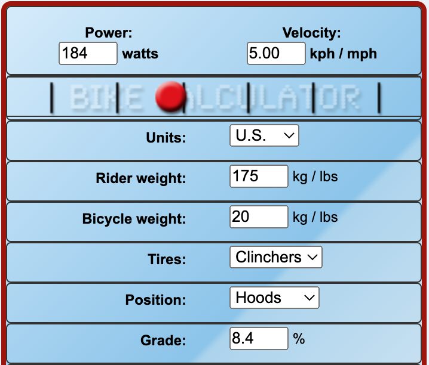

Ride report from my failed Everesting attempt on 03 November 2022.
Everesting II: Defeat by Darkness
My training was pretty good this time around. I invested in a Wahoo KICKR CORE in February 2022 and subscribed to TrainerRoad in July for more structured training instead of just mindlessly spinning on the bike in my living room while watching movies.
I've strength trained consistently throughout the year, but stopped training legs (specifically back rack rear-foot-elevated split squats) because I couldn't keep up with the riding volume and didn't care to try. I kept single-leg Romanian deadlifts in with set/rep/weight ranges being 3x5x100-140.
I tried to start preparation two weeks out sleep- and nutrition-wise. In the days leading up, I got (starting from the night before to two weeks before) 6.5, 8.5, 7, 7.5, 7.5, 7.5, 8, 7, 7, 6.5, 8, 10, 8 hours of sleep. I ate fairly healthily in those two weeks.
I rode for 30 and 40 minutes earlier in the week and had complete rest the day before.
I packed a lot more this go-around. More clothes, more portable phone chargers, more food, and more maintenance gear.

I chose the Far West segment in Austin. It's 0.8 mi long with an average grade of 8.4% and elevation gain of 350 ft, split between two steep hills and one gradual hill. This climb required 84 laps to reach 29,000 ft.
I see the climb in four distinct parts:
I started the ride at 2:00pm on Friday. The first few laps weren't horrible, way easier than I had expected than when I had first laid eyes upon the absolute beast of the hill. I focused on staying to the far right of the road on the smoother concrete than the rough and bumpy asphalt—any power I could save was worth it considering the duration of the effort.
I was doing sets of three reps—each of which took around 11 minutes (9-ish up, 2-ish down)—then resting for 10 minutes or so at the bottom before beginning the next set. I remained in the big gear (52-tooth ring) the entire time except for the very top where it was almost completely flat. The only time that I felt acute physical discomfort was at the end of Steep1—everywhere else was just a matter of continuing to spin in the easy gear and not thinking about it. After a 20+ min break after lap 12 (caused by a talkative mountain biker raving about the nearby trails), I had a massive strain in my right groin that I attribute to getting too cold. I thought I was going to call it because of how painful it was, but after finishing the rep and starting the next one it thankfully went away. Scary!
I was bombing down the hill at 40+ mph in an aero tuck position, having the occasional close call with the speed bumps, especially at night when they come up fast. I was keeping up with cars and got some surprised looks when they realized they weren't gonna be passing me. Some guy even stopped later in the night and told me "I clocked you going 39 mph".
It was in the latter part of the double digits that the number of laps I had remaining began to frighten me. I was on pace for a 24-hour finish time based on strict extrapolation, but my lap times had slown and rest times increased. There was no way I'd be done in 24. Maybe 26, if not 28. But the total time wasn't the worst part.
It was the night. Darkness was absolute by 7:45pm and would remain until 7:00am, 11 total hours spent suffering. The lamp posts that lined the road every so often weren't enough, nor were the occasional headlights. I needed sun. There was no substitute. I knew this from my 24 Hours in the Canyon race earlier this year. The sun enlivens, envigorates, energizes, and ultimately motivates. I had begun caffeinating earlier in the day and was at 400 mg by 9:00pm, the FDA's recommended daily amount for adults. I couldn't keep going at this rate for safety's sake and I was already starting to feel drowsy. I continued on for a couple more laps, but knew in the back of my mind it was futile. There was no way I was going to complete this.
I quit at lap 28 (1/3 of the way), packed up, and went home. There was no point in staying and driving home in the early morning when I was even more exhausted.
I calculated my average power using Bike Calculator (calculation explanation here):
But instantaneous power varied wildly. The first 0.2 miles averaged close to 13% grade, giving me a power output of in the high 200s or low 300s (I don't have a way to check my actual speed during those sections, but I doubt it was significantly slower than the flats since I kept spinning in the big gear).
I'm both happy and surprised with my average power. My FTP according to TrainerRoad was 242 W, so my average was at the upper end of my tempo range and just below my threshold.
My strategy was an atrocious idea. It's one thing to think "I'll just suffer throughout the night" and a completely different to actually do it, to actually be fatigued and drowsy and staring down the barrel of many more laps in all-encompassing darkness with no one to share in your suffering until later. Maybe I could have done it had another person been out there with me, but I didn't have it in me to do it by myself. My next attempt will start as early in the morning as possible (1:00-3:00am) to frontload the dark portion while motivation and energy are high.
I debate whether I should have completed the entirety of the segment, instead of just turning around directly after Steep2 and bombing down for the next rep. Flat1 was a welcome break from the grind in both directions and gave me a four-ish minute break between finishing Steep2 and starting the fast part of the descent. Saving four minutes per lap over the course of 84 laps saves me five hours! But at what cost? How helpful is that break at the top? I'm not sure. But shortening that break by even a minute or two would likely be helpful overall for the sheer time saved. Braking down the hill is not an option because my brakes would overheat easily (and it's too much fun going fast).
My initial strategy was as follows:
But after a few months of thinking and discussing with others, I've decided on this:
I wanted to do this on my late father's bike for sentimental reasons, but at a whopping 32 lb base weight with the really-freaking-knobby Maxxis Minion DHR II tires, using this bike is just not feasible for my first attempt. The last bike I need to add to my fleet is a proper road bike, which is what I'll do my next attempt on.
Failure is valuable and required for growth and progression. The bigger the fail, the more one should examine the factors that contributed. Once the factors are recognized and understood, a plan can be developed to shore up those weaknesses before the next attempt.
My main failure was hubris. My ego has taken a shot and it's for the best. I thought I was fit (enough) and I thought I was tough (enough). I got a reality check to the gut by both the hill and the night.
There's a quote out there by a famous runner-turned-coach (can't remember who) that effectively says both good and bad race results should motivate: good because it reinforces that the training is working properly, bad because it provides more fuel to the fire to do better next time. I disagree with the fuel explanation. To train for a year, being diligent about never missing a section and abstaining from alcohol and junk food and always getting nine hours of high-quality sleep, only to have a crappy race? That's disheartening at best. A year was "wasted" to some, while to others it was spent learning.
This result is both disheartening and motivating to me. I mostly attribute the failure to my strategy, which mostly absolves my training of blame for the poor performance. When I attempt it next time with what I believe to be the optimal strategy I will have a better indicator of the efficacy of my physical and mental training.
One of my favorite quotes of all-time is said by Ronnie Coleman right before he squats like six freakin' plates:
Everybody wants to be a bodybuilder, but nobody wants to lift no heavy-ass weights.
When generalized, this applies to a plethora of disciplines. Everyone wants to achieve something, but nobody wants to suffer during the preparation or execution phase. I wanted to Everest. I thought about it daily for the months leading up to this day. I knew it would be painful. But I wasn't able to suffer the amount required to complete it. Part of that was my poor strategy, part of it was simply lack of mental fortitude. I don't know what the percent split is—I'd guess 70% strategy and 30% mental—but it still didn't happen.
So many people talk the talk, but only a select few walk the walk. I failed to make the exclusive latter group, but will come back to implement lessons learned and make success more likely.